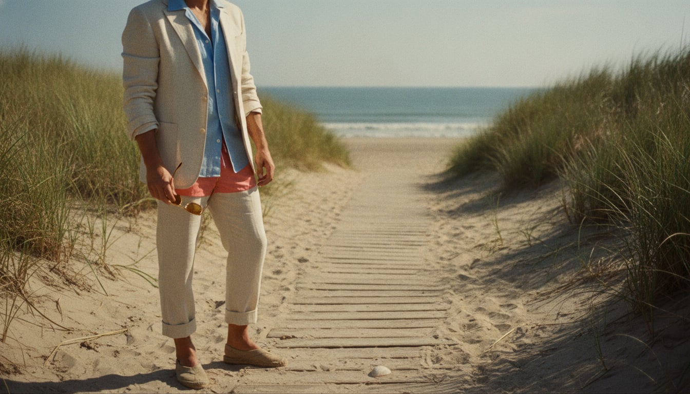
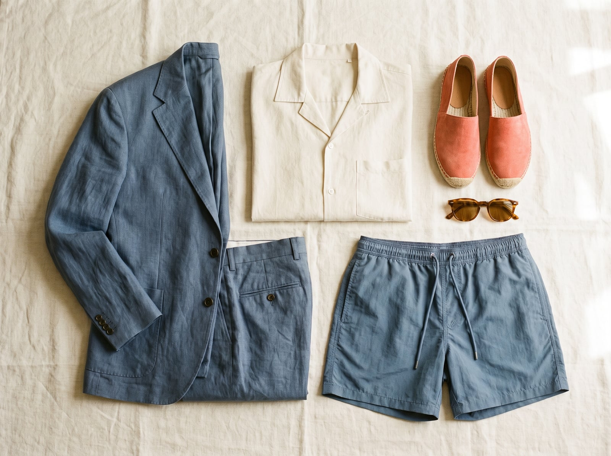

Resort dressing gets its blueprint from the Mediterranean coastline — Cannes, Positano, Capri — where the European wealthy spent the mid-twentieth century inventing a version of tailoring loose enough for a boat and elegant enough for dinner after. The archetype's cultural high-water mark is probably Tom Ripley, invented by Patricia Highsmith and later dressed on screen in unstructured linen suits that made ill intent look like the best-dressed decision in the room — a reminder that this style has always been a little bit about performance.
The trademark is tailoring stripped of its usual stiffness: an unstructured linen or silk-linen jacket with no real shoulder to speak of, trousers cut to be worn with bare ankles, espadrilles instead of anything requiring socks. Color leans light and warm — ecru, sky blue, coral — because the whole point is looking cool while everyone else visibly isn't.
It suits people who treat leisure as a discipline worth taking seriously — who understand that looking effortlessly good on vacation actually requires more consideration than looking good at the office, precisely because there's no dress code to hide behind. There's a genuine hedonism to it, dressed up as elegance.
The Mediterranean resort suit stripped tailoring down to almost nothing structural — Italian mills built entire lines of linen specifically loose and breathable enough to wear comfortably at 90 degrees without looking like you'd given up on dressing well.
The silhouette and breathability at an accessible price, with more synthetic content in the blend.
Shop this →Real Italian linen with genuine unstructured construction.
Shop this →The finest linen the tier reaches, cut by hand.
Shop this →The open, notched camp collar — no top button, no way to close it even if you wanted to — became resort dressing's signature shirt precisely because it refuses the possibility of looking buttoned-up.
The silhouette at an accessible price in cotton or a cotton blend.
Shop this →Better fabric and a more considered, resort-specific cut.
Shop this →Silk or fine cotton cut to measure, resort dressing taken as seriously as a city shirt.
Shop this →The rope-soled espadrille has been Mediterranean peasant and fisherman's footwear for centuries; its adoption by the European wealthy in the mid-twentieth century was a deliberate signal that the wearer no longer needed shoes that implied labor of any kind.
The Spanish maker most associated with authentic espadrille construction.
Shop this →Suede or fine canvas uppers on a hand-braided rope sole.
Shop this →Tailored, mid-length swim shorts with a genuine drawstring waist and side pockets brought resort tailoring's sensibility even into the water, treating swimwear as a real garment rather than pure function.
The short that arguably created this exact category of tailored swimwear.
Shop this →Premium fabric and construction for a garment most wardrobes treat as disposable.
Shop this →On the Riviera, sunglasses function as much as a piece of jewelry as protection from glare — a genuinely well-made pair signals the same unhurried wealth as the rest of this wardrobe.
Hand-finished acetate or precious-metal detailing at the top of the category.
Shop this →Already dressed for it -- linen suit, bare ankles, espadrilles. If anything, more buttons get undone.
This wardrobe mostly doesn't own cold-weather clothes on principle; a cashmere sweater over the shoulders is about as far as it goes before retreating indoors.
An unwelcome interruption -- a simple linen or cotton overshirt gets thrown on, more out of protest than actual protection.
Effectively never happens in this wardrobe's world; if forced, borrowed clothes from someone more prepared.
The linen suit gets swapped for a proper silk-blend one for dinner, the espadrilles become loafers, and cufflinks appear for the first time all week.
The Amalfi Coast, the French Riviera, and a boat, chartered rather than owned, for the month of August specifically.
Patricia Highsmith's Ripley novels, obviously, plus whatever paperback thriller matches the vacation's mood exactly.
Bossa nova, French ye-ye pop, and whatever the beach club's DJ is playing at golden hour.
A summer house that only gets used three months a year, furnished entirely in white and rattan, with sand tracked in as a feature, not a flaw.
Long lunches that become long afternoons, a genuine tan maintained with real discipline, and tennis played more for the outfit than the score.